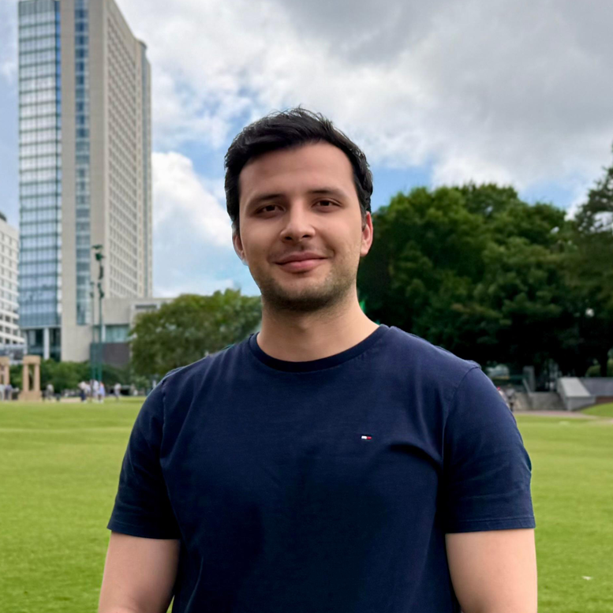

Bedirhan Budak
PhD Student in Computer Science · University of Georgia
I am a Computer Science PhD student at the University of Georgia, where my research focuses on cybersecurity. I have always been fascinated by how systems are designed, how they can be broken, and how they can be made more secure. I approach these problems from both an attacker’s and a defender’s perspective.
I believe meaningful security research requires a balance between theoretical understanding and practical experience. Beyond research, I enjoy exploring cybersecurity through hands-on experimentation, software development, and security challenges. I also value open knowledge, which is why I enjoy writing technical articles to share security concepts with the community.
Outside of my research, I enjoy story-driven video games, playing sports to stay healthy, and exploring general scientific topics beyond computer science.
My long-term goal is to pursue an academic career where I can contribute through research, mentor future engineers and scientists, and help advance cybersecurity in both academia and industry.